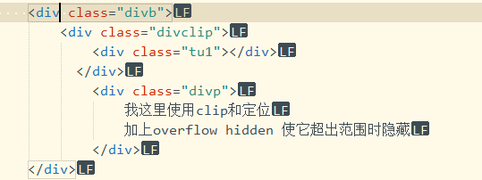
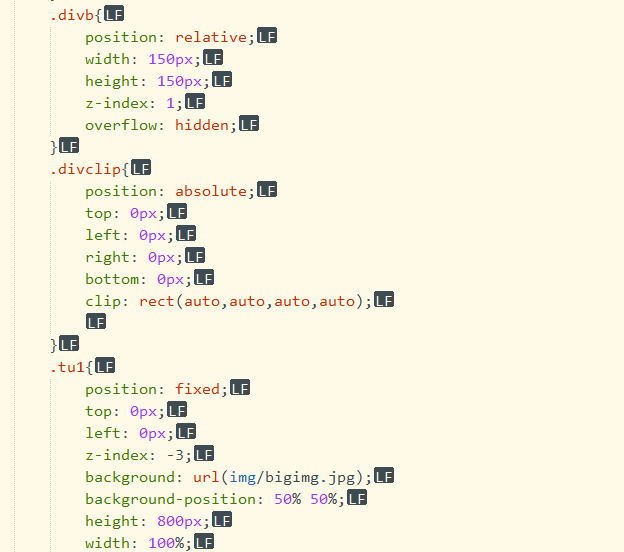
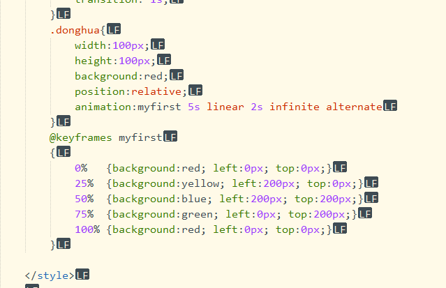
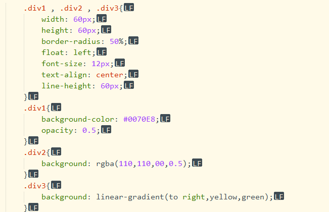
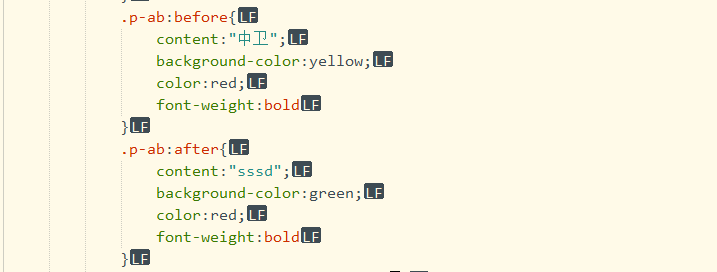
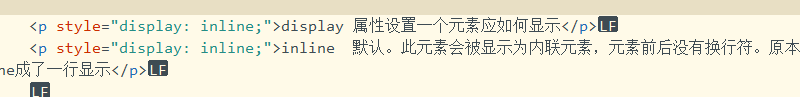
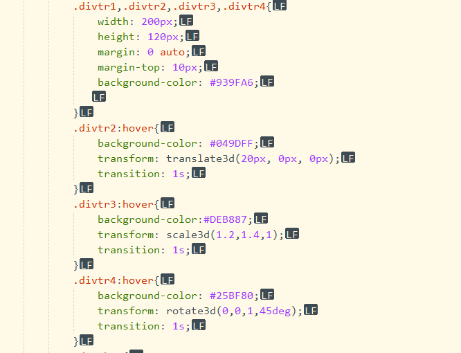
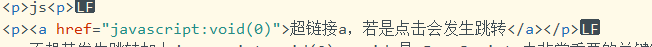
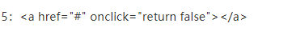

链接是通过标签 a 来定义的. a:active 必须在 a:hover 之后
border:1px solid #049DFF;
border-radius: 10px; 圆形50%
dotted: 定义一个点线边框
dashed: 定义一个虚线边框 solid: 实线边框
box-shadow: 1px -2px 20px 5px #8fa5bf;
box-shadow: h-shadow v-shadow blur spread color inset;
fixed 定位元素的位置相对于浏览器窗口是固定位置。即使窗口是滚动的它也不会移动：
position 属性指定了元素的定位类型。
relative 定位相对定位元素的定位是相对其正常位置。相对定位元素经常被用来作为绝对定位元素的容器块
absolute 定位绝对定位的元素的位置相对于最近的已定位父元素，如果元素没有已定位的父元素，那么它的位置相对于 html
元素的定位与文档流无关，所以它们可以覆盖页面上的其它元素z-index属性指定了一个元素的堆叠顺序（哪个元素应该放在前面，或后面）一个元素可以有正数或负数的堆叠顺序：
clip 裁剪 如果图像大于包含它的元素，会发生什么？-clip属性，让你指定一个绝对定位的元素，该尺寸应该是可见的，该元素被剪裁成这种形状并显示。设置元素的形状。唯一合法的形状值是：rect (top, right, bottom, left) auto 默认值,不应用任何剪裁。
overflow属性指定如果内容溢出一个元素的框，会发生什么
visible 默认值。内容不会被修剪，会呈现在元素框之外。hidden内容会被修剪，并且其余内容是不可见的。scroll 内容会被修剪，但是浏览器会显示滚动条以便查看其余的内容。auto 如果内容被修剪，则浏览器会显示滚动条以便查看其余的内容。 inherit 规定应该从父元素继承 overflow 属性的值。
 CSS3动画 @keyframes规则内指定一个CSS样式和动画将逐步从目前的样式更改为新的样式。当在 @keyframes 创建动画，把它绑定到一个选择器，否则动画不会有任何效果。指定至少这两个CSS3的动画属性绑定向一个选择器：1,规定动画的名称2,规定动画的时长
animation 所有动画属性的简写属性
简写animation：myfirst 5s linear 2s infinite alternate;
第一个是动画的名称
第二个动画所需时间
动画速度曲线与transition相同
动画延迟多长时间开始
循环，这是无限，默认1
是否反方向播放
第一个div使用了opacity: 0.5;改变透明度
第二个div使用了rgba(110,110,00,0.5)改变透明度 区别
第三个div 使用了渐变background: linear-gradient(direction, color-stop1, color-stop2, ...);也可以写角度第一个属性45deg，颜色也可以使用rgba透明
伪元素 :after 选择器向选定的元素之后插入内容。 使用content 属性来指定要插入的内容。:before 选择器向选定的元素前插入内容.它控制的内容实际上和元素是相同的，但是它本身只是基于元素的抽象，并不存在于文档中，所以叫伪元素。
display 属性设置一个元素应如何显示
inline 默认。此元素会被显示为内联元素，元素前后没有换行符。原本p是块元素，设了inline成了一行显示
 block 此元素将显示为块级元素，此元素前后会带有换行符。display:inline-block -- 显示为内联块元素，表现为同行显示并可修改宽高内外边距等属性我们常将元素加上display:inline-block样式，原本垂直的列表就可以水平显示了
对于 CSS 里的 visibility 属性，通常其值被设置成 visible 或 hidden。visibility: hidden 相当于 display:none，能把元素隐藏起来，但两者的区别在于： 1、display:none 元素不再占用空间。 2、visibility: hidden 使元素在网页上不可见，但仍占用空间.
transition属性是一个速记属性有四个属性：transition-property, transition-duration, transition-timing-function, and transition-delay。
transition-delay: time; time 指定秒或毫秒数之前要等待切换效果开始
transition-duration 属性规定完成过渡效果需要花费的时间（以秒或毫秒计）
transition-timing-function: linear|ease|ease-in|ease-out|ease-in-out|cubic-bezier(n,n,n,n);
linear 规定以相同速度开始至结束的过渡效果
ease 规定慢速开始，然后变快，然后慢速结束的过渡效果
ease-in 规定以慢速开始的过渡效果
js
不想其发生跳转加上javascript:void(0) void 是 JavaScript 中非常重要的关键字，该操作符指定要计算一个表达式但是不返回值
 点击按钮发生关闭事件